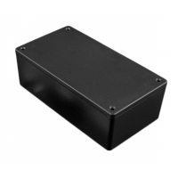

Project template containing the recommended board layout for Hammond Manufacturing 1591XXG:
Translucent - Blue: 1591XXGTBU - HM3985-ND
Black: 1591XXGSFLBK - HM2045-ND
Black: 1591XXGSBK - HM2044-ND
Gray: 1591XXGGY - HM3984-ND
Gray: 1591XXGFLGY - HM2043-ND
Black: 1591XXGFLBK - HM2042-ND
Black: 1591XXGBK - HM2041-ND
|  |
|
The "Dwgs.User" layer contains all critical dimmensions in milimeters[inches].
The "Edge.Cuts" layer contains the maximum board outline and holes to align with board standoffs.
PCB Preview: